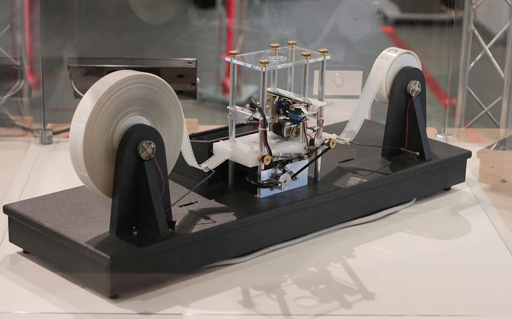
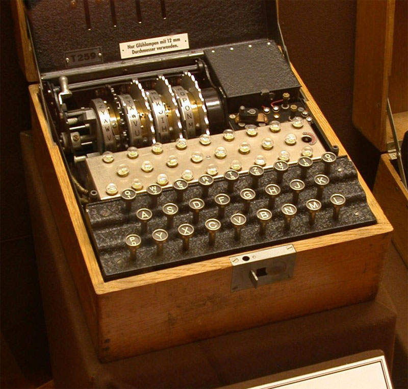

Alan Turing, nato a Londra il 23 giugno 1912, è stato uno dei più brillanti matematici e crittografi del XX secolo. Fin da giovane si appassionò alla matematica, alla scienza e alla chimica, mostrando una curiosità straordinaria verso il funzionamento del mondo.
Nel 1936, all'età di 24 anni, Turing pubblicò *On Computable Numbers*, un'opera che avrebbe cambiato la storia della scienza. Qui introdusse il concetto di "Macchina di Turing", un modello teorico che gettò le basi per i moderni computer. Questa macchina universale, secondo Turing, era in grado di eseguire qualunque calcolo matematico descrivibile con un algoritmo, anticipando l'era digitale.
Nel 1938, Turing venne reclutato nel team di Bletchley Park, un centro top-secret del governo britannico dedicato alla crittoanalisi. Qui affrontò una sfida epocale: decifrare i messaggi criptati tedeschi prodotti dalla macchina Enigma. Grazie alla sua brillante mente e al contributo di un team di matematici, Turing progettò *The Bombe*, un dispositivo capace di testare rapidamente le impostazioni dei codici nemici. Il suo lavoro non solo accorciò la durata della guerra, salvando milioni di vite, ma dimostrò il potenziale della computazione nella risoluzione di problemi complessi.
Nel 1950, Turing pubblicò un altro lavoro fondamentale, *Computing Machinery and Intelligence*, dove pose una domanda ancora oggi discussa: "Le macchine possono pensare?". Da questo interrogativo nacque il celebre *Test di Turing*, un esperimento volto a determinare se una macchina potesse essere considerata intelligente sulla base della sua capacità di imitare le risposte di un essere umano. Questo test è tuttora un caposaldo nello sviluppo dell'intelligenza artificiale.
Nonostante i suoi contributi inestimabili, la vita di Turing fu segnata dalla discriminazione. Nel 1952, a seguito della denuncia di un furto nella sua casa, Turing rivelò di avere una relazione con un uomo. Questo portò al suo arresto per "grave indecenza", un'accusa legata alle leggi contro l'omosessualità in vigore all'epoca. Condannato, Turing fu obbligato a scegliere tra la prigione e la castrazione chimica; optò per la seconda.
Questa persecuzione distrusse la sua carriera e il suo spirito. Nel 1954, a soli 41 anni, Alan Turing fu trovato morto, avvelenato da cianuro. Sebbene le circostanze della sua morte siano ancora avvolte nel mistero, molti credono si sia trattato di suicidio. Solo decenni dopo, nel 2013, la regina Elisabetta II concesse a Turing la grazia postuma, un gesto simbolico che non cancella però le ingiustizie subite.